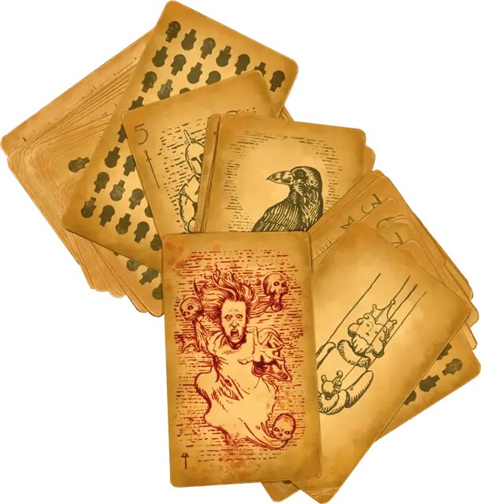

Любина тарокка душ
Luba’s Tarokka of Souls
Чудесный предмет, артефакт (требуется настройка)

Не все томящиеся духи — трагические души, заблудившие на своем пути в загробный мир. Некоторые томятся как пленники, и их души настолько злые, что смертные не осмеливаются выпустить их в ничего не подозревающий загробный мир.
Созданная легендарной вистанкой Любина тарокка душ определила судьбу бесчисленного множества героев. В то же время пророчества этой колоды карт являли великое зло и направляли её создателя на путь нечестивых сил. Неисчислимое количество раз создательница колоды, Матушка Люба, едва избегала гибели, спасаясь только своей проницательностью. Но даже она не могла избежать всех злодеяний. В самых тяжёлых случаях Матушке Любе удавалось заманить творения чистого зла в ловушку меж нитей судьбы, заключая их в свою колоду карт таррока. Эти мерзкие духи всё ещё обитают в колоде, запертые, словно в укромной темнице среди тасующихся карт в ожидании очередного грязного поворота судьбы, который неизбежно случится, как и всегда.
Как и все колоды тарокка, тарокка душ представляет собой красочно иллюстрированный набор из пятидесяти четырёх карт, состоящий из четырнадцати карт старшей колоды и сорока карт младшей колоды, поделённой на четыре масти: мечи, монеты, звёзды и глифы.
Случайные свойства. Этот артефакт обладает следующими случайными свойствами, которые вы можете определить, совершив бросок по таблицам в разделе «Артефакты» «Руководства Мастера»:
- 2 малых отрицательных свойства
- 2 малых положительных свойства
Заклинания. Держа колоду, вы можете действием наложить одно из следующих заклинаний (Сл спасброска 18): наблюдение [scrying], обнаружение болезней и яда [detect poison and disease], обнаружение зла и добра [detect evil and good], обнаружение магии [detect magic], поиск предмета [locate object] или понимание языков [comprehend languages]. Наложив заклинание при помощи колоды, вы не сможете наложить его из колоды снова до следующего рассвета.
Стойкое видение. Держа колоду, вы автоматически преуспеваете в спасбросках Телосложения для поддержания концентрации на заклинаниях школы Прорицания.
Поворот судьбы. Действием вы можете вытащить карту из колоды и изменить судьбу другого существа, которое вы можете видеть в пределах 15 футов. Выберите один из следующих эффектов:
Благо. Существо совершает броски атаки, проверки характеристик и спасброски с преимуществом в течение следующего часа.
Горе. Существо совершает броски атаки, проверки характеристик и спасброски с помехой в течение следующего часа.
Колоду можно использовать таким образом дважды, она восстанавливает все использования на следующем рассвете.
Заложники судьбы. Всякий раз, когда вы используете свойство «Поворот судьбы», есть шанс, что одна из заключённых в колоде душ освободится. Бросьте к100 и сверьтесь с таблицей «Души тарокка». Если результату броска соответствует одна из старших карт, то связанная с ней душа освобождается. Вы можете найти характеристики существа в «Бестиарии». Если душа, соответствующая результату броска, уже освободилась, то бросьте кость снова.
Души тарокка
| к100 | Карта | Душа |
| 1 | Артефакт | Пылающий череп [flameskull] |
| 2 | Зверь | Призрак [wraith] |
| 3 | Сломленный | Баньши [banshee] |
| 4 | Тёмный властелин | Вампир [vampire] |
| 5 | Донжон | Мумия [mummy] |
| 6 | Палач | Рыцарь смерти [death knight] |
| 7 | Призрак | Привидение [ghost] |
| 8 | Всадник | Лорд-мумия [mummy lord] |
| 9 | Невинный | Привидение [ghost] |
| 10 | Марионетка | Мумия [mummy] |
| 11 | Туманы | Призрак [wraith] |
| 12 | Ворон | Порождение вампира [vampire spawn] |
| 13 | Провидец | Вампир [vampire] |
| 14 | Искуситель | Порождение вампира [vampire spawn] |
| 15-00 | - | - |
Освобождённая душа появляется в случайном месте в пределах 10к10 миль от вас и терроризирует живых. До тех пор, пока освобождённая душа не будет уничтожена, она получает эффект «Благо» от свойства «Поворот судьбы», а вы и первоначальная цель применения вами свойства «Поворот судьбы» страдаете от эффекта «Горе».
Тасовка судьбы. Если вы не пользуетесь свойством «Поворот судьбы» 7 дней, ваша настройка на Любину тарокку душ заканчивается, и вы не можете настроиться на неё снова, пока другое существо не использует «Поворот судьбы» на вас.
Уничтожение колоды. Любина тарокка душ может быть уничтожена только в том случае, если все четырнадцать душ внутри будут освобождены и уничтожены. Это откроет пятнадцатую душу, лича [lich], обитающего в карте «Темница», которая появляется только тогда, когда четырнадцать душ побеждены. Если эта древняя сущность будет уничтожена, карта «Темница» исчезнет, и колода станет обычной колодой тарокка без особых свойств, но она станет включать в себя некоторую новую карту, созданную Мастером.
Матушка Люба и вистани
Матушка Люба, создательница тарокки душ, была одним из самых влиятельных лидеров вистани. На протяжении неисчислимых поколений вистани бродили по Царству Теней, которое включает в себя ужасающие демипланы, такие как, например, населённое вампирами царство Баровия. Эти путешественники изучили множество тайн этих владений и встретили бесчисленное множество других, блуждающих среди ужасов Царства Теней. Большинство групп вистани принимают благонамеренных путников из разных стран и разного происхождения, радушно встречая любого, кто ищет дом среди бесконечных дорог и скрытых туманами видов.
Матушка Люба, полурослик-вистани, возглавляла одну из самых больших групп вистани в Царстве Теней. Она была родом из того же мира, что и граф Страд фон Зарович и Мадам Ева, и она создала сообщество доброты и стойкости, которые редко можно встретить на плане Теней. Она учила свой народ быть приветливыми с незнакомцами, кормить голодных и бросать вызов жестокости. Она и Мадам Ева были когда-то друзьями, пока Мадам Ева не начала заключать сделки с созданиями ночи. «Мы можем бродить среди теней, — говорила Матушка Люба, — но мы всегда должны служить светом для наших попутчиков».
Несколько лет назад Матушка Люба исчезла в туманах, оставив после себя только тарокку душ. Говорят, что если вытащить из него карту Туманов, то можно услышать её мягкий шёпот.